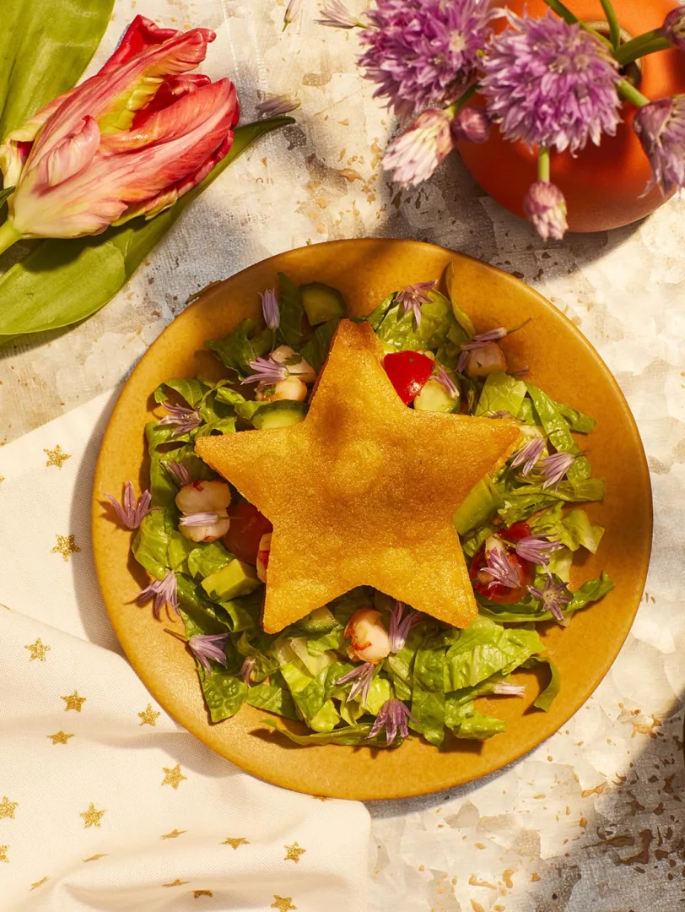

Home
Lucky Lunch

Shrimp Ceviche on a Bed of Greens
If you’ve been on the hunt for the perfect seafood lunch, then you’re in luck! A tangy mix of poached shrimp and fresh vegetables nestled between two star-shaped toasted tortillas delivers a cool, refreshing blast of seafood flavor with every bite. The tortilla stars can be broken up into chips as you eat, or if you’re feeling especially adventurous—and have plenty of napkins handy—you can try eating the whole thing like a sandwich. After you’ve cleaned your plate, you’re bound to feel like the spirits are smiling down on you all day long!
Makes 4 servings
- In a large saucepan over medium-high heat, bring the water to a boil. Stir in 2 tablespoons of the lime juice and 1 tablespoon of salt, then add the shrimp. Cover with a lid and immediately turn off the heat. Keep the shrimp in the hot liquid until just cooked through, 3 to 4 minutes. Drain and let cool slightly.
- Cut the shrimp into 1/2-inch pieces and place in a large bowl. Add the remaining 6 tablespoons lime juice, 2 tablespoons of the olive oil, the sugar, garlic, red onion, jalapeño, cucumber, cherry tomatoes, and 1 teaspoon salt. Stir to combine, then cover and refrigerate for at least 2 hours and up to 4 hours.
- Set 2 racks in the upper and lower thirds of the oven and preheat the oven to 350°F.
- Stack the tortillas in 2 piles of 6 each and use a 6-inch star stencil or freehand to cut out stars (keep any scraps). Divide the tortilla stars between 2 large baking sheets, brush all over with some of the remaining olive oil, and season liberally with salt.
- Bake in the oven until lightly browned in spots and crispy, 15 to 20 minutes, flipping once and rotating the baking sheets top to bottom once after 10 minutes. Transfer the baked stars to a wire rack to cool. Leave the oven on.
- Let the baking sheets cool completely, then wipe off any excess oil and salt. Divide the tortilla scraps between the baking sheets, spreading them out in a single layer. Brush the scraps with more of the olive oil and season liberally with salt.
- Bake until lightly browned in spots and crispy, about 15 minutes, flipping the scraps over and rotating the baking sheets top to bottom once after 8 minutes. Transfer the scraps to the wire rack to cool completely.
- When you are ready to serve, stir the avocado, chive greens, and cilantro into the shrimp ceviche. Taste for seasoning and add more salt, if needed. To plate the Lucky Lunch, scatter one-fourth of the romaine on a large serving plate, then drizzle with some of the shrimp marinade.
- Use a slotted spoon to scoop 1/3 cup of the ceviche onto the center of the lettuce, then top with 1 star tortilla chip. Layer with another scoop of ceviche, another star tortilla chip, more ceviche, and top with another star tortilla chip. Garnish with some of the chive blossoms.
- Repeat to make 3 additional Lucky Lunches and serve immediately, with a bowl of the baked tortilla chips alongside.